공유압기능사 (2015-10-10 기출문제)
1과목: 임의구분
1. 압력제어 밸브에서 상시 열림 기호는?
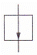
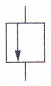
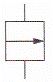
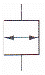
(정답률: 88%)

2. 유량비례분류 밸브의 분류 비율은 일반적으로 어떤 범위에서 사용하는가?
- 1 : 1~36 : 1
- 1 : 1~27 : 1
- 1 : 1~18 : 1
- 1 : 1~9 : 1
(정답률: 78%)
3. 그림의 회로도에서 죔 실린더의 전진 시 최대 작용압력은 몇 [kgf/cm2] 인가?
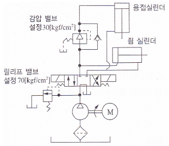
- 30
- 40
- 70
- 110
(정답률: 79%)
4. 그림의 실린더는 피스톤 단면적(A)이 20[cm2], 행정거리(s) 는 10[cm]이다. 이 실린더가 전진행정을 1분 동안에 마치려면 필요한 공급유량은 약 몇 [cm3/sec] 인가?
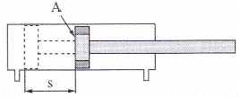
- 1.1
- 2.2
- 3.3
- 4.4
(정답률: 60%)
5. 미리 정한 복수의 입력신호조건을 동시에 만족하였을 경우에만 출력에 신호가 나오는 공압회로는?
- AND 회로
- OR 회로
- NOR 회로
- NOT 회로
(정답률: 88%)
6. 공기압 장치의 배열 순서로 옳은 것은?
- 공기압축기→공기탱크→에어드라이어→공기압조정유닛
- 공기압축기→에어드라이어→공기압조정유닛→공기탱크
- 공기압축기→공기압조정유닛→에어드라이어→공기탱크
- 에어드라이어→공기탱크→공기압조정유닛→공기압축기
(정답률: 67%)
7. 자동화 라인에 사용하는 공기압력 게이지가 0.5[MPa]을 나타내고 있다. 이때 사용되고 있는 공압동력장치는?
- 팬
- 압축기
- 송풍기
- 공기 여과기
(정답률: 61%)
8. 유압 실린더의 조립형식에 의한 분류에 속하지 않는 것은?
- 일체형 방식
- 슬라이딩 방식
- 플랜지 방식
- 볼트 삽입 방식
(정답률: 49%)
9. 방향제어 밸브의 연결구 표시 중 공급라인의 숫자 및 영문 표시(ISO 규격)는?
- 1, A
- 2, B
- 1, P
- 2, R
(정답률: 74%)
10. 다음 중 유체에너지를 기계적인 에너지로 변환하는 장치는?
- 유압탱크
- 액추에이터
- 유압펌프
- 공기압축기
(정답률: 70%)
11. 다음 중 요동형 액추에이터의 기호는?
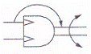
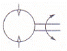
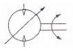
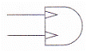
(정답률: 71%)
12. 유압장치에서 작동유를 통과, 차단시키거나 또는 진행 방향을 바꾸어 주는 밸브는?
- 유압차단 밸브
- 유량제어 밸브
- 압력제어 밸브
- 방향전환 밸브
(정답률: 81%)
13. 공압의 특성 중 장점에 속하지 않는 것은?
- 이물질에 강하다.
- 인화의 위험이 없다.
- 에너지 축적이 용이하다.
- 압축공기의 에너지를 쉽게 얻을 수 있다.
(정답률: 65%)
14. 동력에 관한 설명으로 옳은 것은?
- 작용한 힘의 크기와 움직인 거리의 곱이다.
- 작용한 힘의 크기와 움직이는 속도의 곱이다.
- 작용한 압력의 크기와 움직인 거리의 곱이다.
- 작용한 압력의 크기와 움직이는 속도의 곱이다.
(정답률: 58%)
15. 그림과 같은 유압회로에서 실린더의 속도를 조절하는 방법으로 가장 적절한 것은?
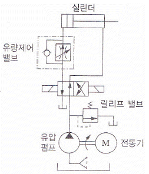
- 가변형 펌프의 사용
- 유량제어 밸브의 사용
- 전동기의 회전수 조절
- 차동 피스톤 펌프의 사용
(정답률: 85%)
16. 속도에너지를 이용하여 피스톤을 고속으로 움직이게 하는 공압 실린더는?
- 탠덤형 공압 실린더
- 다위치형 공압 실린더
- 텔레스코프형 공압 실린더
- 임팩트 실린더형 공압 실린더
(정답률: 65%)
17. 다음 중 작동유의 열화 판정법으로 적절한 것은?
- 성상 시험법
- 초음파 진단법
- 레이저 진단법
- 플라즈마 진단법
(정답률: 57%)
18. 위치 검출용 스위치의 부착 시 주의사항에 관한 설명으로 옳지 않은 것은?
- 스위치 부하의 설계 선정 시 부하의 과도적인 전기 특성에 주의한다.
- 전기 용접기 등의 부근에는 강한 자계가 형성되므로 거리를 두거나 차폐를 실시한다.
- 직렬접속은 몇 개라도 접속이 가능하지만 스위치의 누설전류가 접속 수만큼 커지므로 주의한다.
- 실린더 스위치는 전기 접점이므로 직접 정격 전압을 가하면 단락되어 스위치나 전기회로를 파손시킨다.
(정답률: 60%)
19. 다음 중 유압을 발생시키는 부분은?
- 안전 밸브
- 제어 밸브
- 유압 모터
- 유압 펌프
(정답률: 76%)
20. 압축공기의 저장탱크를 구성하는 기기가 아닌 것은?
- 압력계
- 차단 밸브
- 유량계
- 압력 스위치
(정답률: 73%)
2과목: 임의구분
21. 순수 공압 제어회로의 설계에서 신호의 트러블(신호 중복에 의한 장애)을 제거하는 방법 중 메모리 밸브를 이용한 공기 분배방식은?
- 3/2-Way 밸브의 사용 방식
- 시간지연 밸브의 사용 방식
- 캐스케이드 체인 사용 방식
- 방향성 리밋 스위치의 사용 방식
(정답률: 51%)
22. 공기 마이크로미터 등의 정밀용에 사용되는 공기 여과기의 여과 엘리먼트 틈새 범위로 옳은 것은?
- 5[µm] 이하
- 5~10[µm]
- 10~40[µm]
- 40~70[µm]
(정답률: 57%)
23. 무부하 회로의 장점이 아닌 것은?
- 유온의 상승효과
- 펌프의 수명연장
- 유압유의 노화 방지
- 펌프의 구동력 절약
(정답률: 75%)
24. 유압을 측정했더니 압력계의 지침이 50[kgf/cm2]일 때 절대압력은 약 몇 [kgf/cm2]인가?
- 35
- 40
- 51
- 61
(정답률: 73%)
25. 베르누이의 정리에서 에너지 보존의 법칙에 따라 유체가 가지고 있는 에너지가 아닌 것은?
- 위치에너지
- 마찰에너지
- 운동에너지
- 압력에너지
(정답률: 74%)
26. 실린더의 동작시간을 결정하는 요인이 아닌 것은?
- 검출 센서의 종류
- 실린더의 피스톤에 가해지는 부하
- 실린더 흡기측에 압력을 공급하는 능력
- 실린더 배기측의 압력을 배기하는 능력
(정답률: 69%)
27. 증압기에 관한 설명으로 옳지 않은 것은?
- 입구측 압력은 공압을, 출구측 압력은 유압으로 변환하여 증압한다.
- 직압식 증압기는 공압 실린더부와 유압 실린더부가 있고 이들 내부에 중압로드가 있다.
- 예압식 증압기는 직압식과 구조가 유사하며, 공유압 변환기가 오일탱크 전단에 설치되어 있다.
- 증압기는 일반적으로 중압비 10~25 정도의 것이 많으며 공기압 0.5[MPa]일 때 발생하는 유압은 5~12.5[MPa] 정도이다.
(정답률: 43%)
28. 다음의 오염물질 중 밸브 몸체에 고착, 씰(Seal) 불량, 누적에 의한 화재 및 폭발, 오염 등의 원인이 되는 이물질은?
- 녹
- 유분
- 수분
- 카본
(정답률: 64%)
29. 입력라인용 필터의 막힘과 이로 인한 엘리먼트의 파손을 방지할 목적으로 라인필터에 부착하는 밸브는?
- 귀환 밸브
- 릴리프 밸브
- 체크 밸브
- 어큐뮬레이터
(정답률: 44%)
30. 실린더의 귀환행정 시 일을 하지 않을 경우 귀환속도를 빠르게 하여 시간을 단축시킬 필요가 있을 때 사용하는 밸브는?
- 2압 밸브
- 셔틀 밸브
- 체크 밸브
- 급속배기 밸브
(정답률: 84%)
31. 그림에서 X로 표시되는 기기는 무엇을 측정하는 것인가?
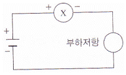
- 교류전압
- 교류전류
- 직류전압
- 직류전류
(정답률: 63%)
32. 빌딩, 아파트 물탱크(수조)의 수위를 검출하는 스위치는?
- 포토 스위치
- 한계 스위치
- 근접 스위치
- 플로트 계전기
(정답률: 65%)
33. 전력을 바르게 표현한 것은?
- 전압×저항
- 저항/전류
- 전압×전류
- 전압/저항
(정답률: 76%)
34. 구동회로에 가해지는 펄스 수에 비례한 회전각도 만큼 회전시키는 특수 전동기는?
- 분권 전동기
- 직권 전동기
- 타여자 전동기
- 직류 스테핑 전동기
(정답률: 58%)
35. 자석 부근에 못을 놓으면 못도 자석이 되어 자성을 가지게되는데 이러한 현상을 무엇이라고 하는가?
- 절연
- 자화
- 자극
- 전자력
(정답률: 79%)
36. RL 병렬 회로에 100∠0°[V]의 전압이 가해질 경우에 흐르는 전체 전류(I)은 몇 [A]인가? (단, R=100[Ω], ωL=100[Ω] 이다.)
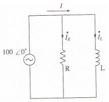
- 1
- 2
- √2
- 100
(정답률: 53%)
37. 금속 및 전해질 용액과 같이 전기가 잘 흐르는 물질을 무엇이라 하는가?
- 도체
- 저항
- 절연체
- 반도체
(정답률: 86%)
38. 시퀀스 제어계의 구성 요소에서 검출부, 명령처리부, 조작부, 표시경보부를 총칭하여 무엇이라 하는가?
- 제어부
- 제어대상
- 조절기
- 제어명령
(정답률: 80%)
39. 인파 교류 파형에서 주기 T[s], 주파수 f[Hz]와 각 속도 w[rad/s] 사이의 관계식을 바르게 표기한 것은?
- ω=2πf
- ω=2πT
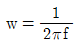
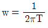
(정답률: 61%)
40. 발전기의 배전반에 달려 있는 계전기 중 대전류가 흐를 경우 회로의 기기를 보호하기 위한 장치는 무엇인가?
- 과전압 계전기
- 과전력 계전기
- 과속도 계전기
- 과전류 계전기
(정답률: 81%)
3과목: 임의구분
41. 전압계 사용법 중 틀린 것은?
- 전압의 크기를 측정할 시 사용된다.
- 교류 전압 측정 시에는 극성에 유의한다.
- 전압계는 회로의 두 단자에 병렬로 연결한다.
- 교류 전압을 측정할 시에는 교류 전압계를 사용한다.
(정답률: 59%)
42. b 접점(Break Contact)에 대한 설명으로 옳은 것은?
- 간접 조작에 의해 열리거나 닫히는 접점
- 전환 접점으로 a 접점과 b 접점을 공유한 접점
- 항상 열려 있다가 외부의 힘에 의하여 닫히는 접점
- 항상 닫혀 있다가 외부의 힘에 의하여 열리는 접점
(정답률: 77%)
43. 반도체 소자는 작은 신호를 증폭하여 큰 신호를 만들거나 신호의 모양을 바꾸는데 사용되어 왔으며, 기술의 발전에 따라 전압과 전류의 용량을 크게 만들 수 있게 되었다. 다음 중 반도체에 관한 설명으로 옳지 않은 것은?
- 저항률이 10-4[Ωㆍm] 이하를 말한다.
- P형 반도체는 정공, 즉 (+)성분이 남는다.
- 다이오드는 P형과 N형 반도체를 접합한 것이다.
- 대표적인 반도체 소자는 다이오드, 트랜지스터 FET 등이 있다.
(정답률: 60%)
44. 직류기를 구성하는 주요 부분이 아닌 것은?
- 계자
- 필터
- 정류자
- 전기자
(정답률: 76%)
45. 3상 교류의 △결선에서 상전압과 선간접압의 크기 관계를 바르게 표시한 것은?
- 상전압＜선간전압
- 상전압＞선간전압
- 상전압=선간전압
- 상전압≤선간전압
(정답률: 66%)
46. 구의 반지름을 나타내는 치수 보조 기호는?
- Sø
- R
- ø
- SR
(정답률: 75%)
47. 판금 제품을 만드는 데 필요한 도면으로 입체의 표면을 한 평면 위에 펼쳐서 그리는 도면은?
- 회전 평면도
- 전개도
- 보조 투상도
- 사투상도
(정답률: 73%)
48. A : B로 척도를 표시할 때 A : B의 설명으로 옳은 것은? (순서대로 A : B)
- 도면에서의 길이 : 대상물의 실제 길이
- 도면에서의 치수값 : 대상물의 실제 길이
- 대상물의 실제 길이 : 도면에서의 길이
- 대상물의 크기 : 도면의 크기
(정답률: 65%)
49. 설명용 도면으로 사용되는 캐비닛도를 그릴 때 사용하는 투상법으로 옳은 것은?
- 정투상
- 등각투상
- 사투상
- 투시투상
(정답률: 46%)
50. 그림과 같은 입체도에서 화살표 방향을 정면으로 할 때 좌측면도로 옳은 것은? (단, 정면도에서 좌우 대칭이다.)
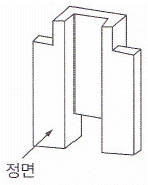
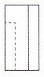
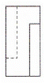
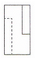
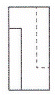
(정답률: 77%)
51. 일반 구조용 압연강재의 KS 기호는?
- SPCG
- SPHC
- SS400
- STS304
(정답률: 66%)
52. 기계제도에서 가는 실선으로 나타내는 선은?
- 외형선
- 피치선
- 가상선
- 파단선
(정답률: 49%)
53. 강도와 기밀을 필요로 하는 압력용기에 쓰이는 리벳은?
- 접시머리 리벳
- 둥근머리 리벳
- 납작머리 리벳
- 얇은 납작머리 리벳
(정답률: 59%)
54. 다음 중 가장 큰 회전력을 전달할 수 있는 것은?
- 안장 키
- 평 키
- 묻힘 키
- 스플라인
(정답률: 63%)
55. 양끝을 고정한 단면적 2[cm2]인 사각봉이 온도 -10[℃]에서 가열되어 50[℃]가 되었을 때, 재료에 발생하는 열응력은? (단, 사각봉의 탄성계수는 21[GPa], 선팽창계수는 12×10-6[/℃] 이다.)
- 15.1[MPa]
- 25.2[MPa]
- 29.9[MPa]
- 35.8[MPa]
(정답률: 27%)
56. 다음 중 V벨트의 단면 형상에서 단면이 가장 큰 벨트는?
- A
- C
- E
- M
(정답률: 67%)
57. 체결하려는 부분이 두꺼워서 관통구멍을 뚫을 수 없을 때 사용되는 볼트는?
- 탭 볼트
- T홈 볼트
- 아이 볼트
- 스테이 볼트
(정답률: 65%)
58. 표준기어의 피치점에서 이끝까지의 반지름 방향으로 측정한 거리는?
- 이뿌리 높이
- 이끝 높이
- 이끝 원
- 이끝 틈새
(정답률: 63%)
59. 풀리의 지름 200[mm], 회전수 900[rpm]인 평벨트 풀리가 있다. 벨트의 속도는 약 몇 [m/s]인가?
- 9.42
- 10.42
- 11.42
- 12.42
(정답률: 36%)
60. 나사에서 리드(L), 피치(P), 나사 줄 수(n)와의 관계식으로 옳은 것은?
- L=P
- L=2P
- L=nP
- L=m
(정답률: 79%)